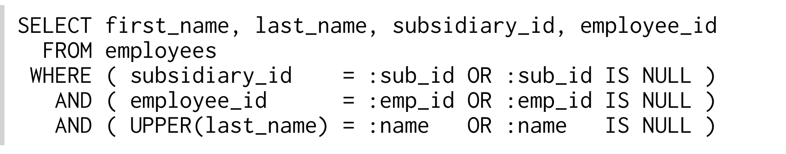
Query dùng named bind variable để dễ đọc hơn. Mọi filter expression có thể có đều được viết tĩnh trong statement. Khi không cần một filter, bạn chỉ cần dùng NULL thay cho search term: logic OR sẽ disable condition đó.
Đây là một SQL statement hoàn toàn hợp lý. Việc dùng NULL thậm chí còn phù hợp với định nghĩa của nó theo three-valued logic của SQL. Tuy nhiên, đây lại là một trong những performance anti-pattern tệ nhất.
Database không thể optimize execution plan cho một filter cụ thể vì bất kỳ filter nào cũng có thể bị hủy ở runtime. Database phải chuẩn bị cho trường hợp xấu nhất — khi tất cả filter đều bị disable:
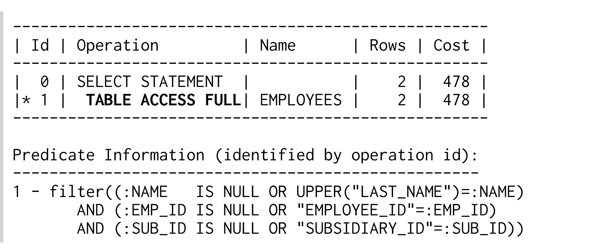
Vì vậy, database dùng full table scan ngay cả khi có index cho từng column.
Không phải database không thể resolve “smart” logic. Database tạo generic execution plan vì bind parameter cho phép plan được cache và re-use với các value khác về sau. Nếu không dùng bind parameter mà viết actual value vào SQL statement, optimizer sẽ chọn index phù hợp cho filter đang active:
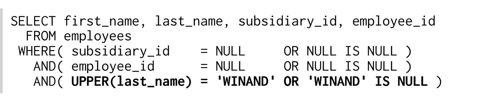
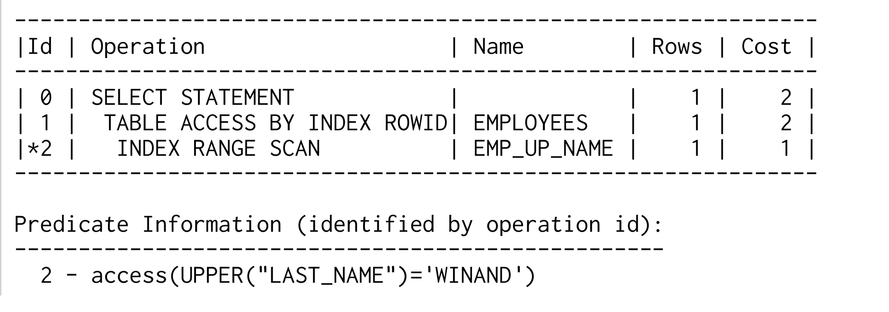
Tuy nhiên, đây không phải là giải pháp. Nó chỉ chứng minh rằng database có thể resolve các condition này.
Giải pháp hiển nhiên cho dynamic query là dynamic SQL. Theo nguyên tắc KISS, hãy chỉ nói cho database biết bạn cần gì ngay lúc này — và không gì khác.
Lưu ý rằng query này dùng một bind parameter.
Vấn đề được mô tả trong phần này rất phổ biến. Mọi database dùng shared execution plan cache đều có một feature để xử lý nó — thường lại đưa vào những problem và bug mới.
3
http://en.wikipedia.org/wiki/KISS_principle
MySQL không gặp vấn đề cụ thể này vì nó hoàn toàn không có execution plan cache. Một feature request từ năm 2009 bàn về ảnh hưởng của execution plan caching. Có vẻ optimizer của MySQL đủ đơn giản để execution plan caching không mang lại lợi ích.
Oracle database dùng shared execution plan cache (“SQL area”) và hoàn toàn chịu ảnh hưởng của vấn đề được mô tả trong phần này.
Oracle giới thiệu bind peeking từ release 9i. Bind peeking cho phép optimizer dùng bind value thực tế của lần execute đầu tiên khi chuẩn bị execution plan. Vấn đề của cách tiếp cận này là behavior không deterministic: value của lần execute đầu tiên ảnh hưởng đến mọi lần execute. Execution plan có thể thay đổi khi database restart hoặc, khó đoán hơn, khi cached plan hết hạn và optimizer tạo lại nó bằng các value khác vào lần statement được execute tiếp theo.
Release 11g giới thiệu adaptive cursor sharing để cải thiện tình hình hơn nữa. Feature này cho phép database cache nhiều execution plan cho cùng một SQL statement. Ngoài ra, optimizer peek bind parameter và lưu estimated selectivity của chúng cùng với execution plan.
Khi cache được truy cập sau đó, selectivity của bind value hiện tại phải nằm trong các selectivity range của một cached execution plan thì plan đó mới được re-use. Nếu không, optimizer tạo execution plan mới và so sánh nó với các execution plan đã cache cho query này. Nếu đã có execution plan như vậy, database thay thế nó bằng execution plan mới cũng bao phủ các selectivity estimate của bind value hiện tại. Nếu chưa có, database cache một execution plan variant mới cho query này — dĩ nhiên kèm theo các selectivity estimate.
PostgreSQL query plan cache chỉ hoạt động với statement đang mở — tức là chừng nào bạn còn giữ PreparedStatement mở. Vấn đề được mô tả ở trên chỉ xảy ra khi re-use statement handle. Lưu ý rằng JDBC driver của PostgresSQL chỉ enable cache sau lần execute thứ năm.
SQL Server dùng parameter sniffing. Parameter sniffing cho phép optimizer dùng bind value thực tế của lần execute đầu tiên trong quá trình parsing. Vấn đề của cách tiếp cận này là behavior không deterministic: value của lần execute đầu tiên ảnh hưởng đến mọi lần execute. Execution plan có thể thay đổi khi database restart hoặc, khó đoán hơn, khi cached plan hết hạn và optimizer tạo lại nó bằng các value khác vào lần statement được execute tiếp theo.
SQL Server 2005 bổ sung các query hint mới để kiểm soát parameter sniffing và việc recompile tốt hơn. Query hint RECOMPILE bypass plan cache cho một statement được chọn. OPTIMIZE FOR cho phép chỉ định các parameter value được dùng riêng cho optimization. Cuối cùng, bạn có thể cung cấp toàn bộ execution plan bằng hint USE PLAN.
Implementation ban đầu của hint OPTION(RECOMPILE) có một bug nên không xem xét tất cả bind variable. Implementation mới được giới thiệu trong SQL Server 2008 lại có một bug khác, khiến tình hình trở nên rất confusing. Erland Sommarskog đã tập hợp toàn bộ thông tin liên quan cho tất cả release của SQL Server.
4
http://www.sommarskog.se/dyn-search-2008.html
Các heuristic method có thể cải thiện vấn đề “smart logic” ở một mức độ nhất định, nhưng thực ra chúng được xây dựng để xử lý vấn đề của bind parameter liên quan đến column histogram và LIKE expression.
Phương pháp đáng tin cậy nhất để đạt được execution plan tốt nhất là tránh các filter không cần thiết trong SQL statement.
Còn một nhóm obfuscation nữa cũng rất “smart” và ngăn index được sử dụng đúng. Thay vì dùng logic expression, nó dùng phép tính.
Hãy xét statement sau. Nó có thể dùng index trên NUMERIC_NUMBER không?
Tương tự, statement sau có thể dùng index trên A và B — bạn tự chọn thứ tự — không?
Hãy đặt các câu hỏi này dưới một góc nhìn khác; nếu bạn đang phát triển một SQL database, bạn có bổ sung equation solver không? Phần lớn database vendor chỉ trả lời “No!” và vì vậy, cả hai ví dụ đều không dùng được index.
Bạn thậm chí có thể cố ý dùng phép toán để obfuscate một condition — như chúng ta đã làm trước đó với full text LIKE search. Chỉ cần thêm zero là đủ, chẳng hạn:
Tuy vậy, chúng ta có thể index các expression này bằng function-based index nếu dùng phép tính theo cách thông minh và biến where clause thành một phương trình:
Chúng ta chỉ chuyển các table reference sang một vế và constant sang vế còn lại. Sau đó có thể tạo function-based index cho vế trái của phương trình:
Chương này nói về performance và scalability của database.
Trong ngữ cảnh này, tôi dùng định nghĩa sau cho scalability:
Scalability là khả năng của một system, network hoặc process xử lý một lượng công việc ngày càng tăng theo cách có năng lực,
hoặc
khả năng được mở rộng để đáp ứng mức tăng trưởng đó.
—Wikipedia
Bạn thấy rằng thực ra có hai định nghĩa. Định nghĩa thứ nhất nói về tác động của tải tăng lên một system, còn định nghĩa thứ hai nói về việc mở rộng system để xử lý nhiều tải hơn.
Định nghĩa thứ hai phổ biến hơn nhiều so với định nghĩa thứ nhất. Mỗi khi ai đó nói về scalability, gần như lúc nào họ cũng nói về việc dùng thêm hardware. Scale-up và scale-out là hai keyword tương ứng, gần đây được bổ sung bởi những buzzword mới như web-scale.
Nói rộng ra, scalability nói về tác động performance của các thay đổi trong môi trường. Hardware chỉ là một parameter môi trường có thể thay đổi. Chương này cũng đề cập đến các parameter khác như data volume và system load.
1
http://en.wikipedia.org/wiki/Scalability
Lượng data được lưu trong database có ảnh hưởng lớn đến performance. Thông thường người ta chấp nhận rằng query sẽ chậm hơn khi database có thêm data. Nhưng performance bị ảnh hưởng nhiều đến mức nào nếu data volume tăng gấp đôi? Và làm thế nào để cải thiện tỷ lệ này? Đây là những câu hỏi then chốt khi bàn về database scalability.
Để làm ví dụ, chúng ta phân tích response time của query sau khi dùng hai index khác nhau. Tạm thời chưa biết các index definition — chúng sẽ được tiết lộ trong quá trình thảo luận.
Column SECTION có một mục đích đặc biệt trong query này: nó kiểm soát data volume. SECTION càng lớn thì query càng select nhiều row. Figure 3.1 cho thấy response time với một SECTION nhỏ.
Figure 3.1. So sánh performance
Có khác biệt đáng kể về performance giữa hai variant của index. Cả hai response time vẫn thấp hơn nhiều so với một phần mười giây, nên trong hầu hết trường hợp query chậm hơn có lẽ vẫn đủ nhanh. Tuy nhiên, biểu đồ performance chỉ cho thấy một test point. Bàn về scalability nghĩa là phải xem tác động performance khi thay đổi các parameter môi trường — chẳng hạn data volume.
Figure 3.2 cho thấy response time theo số SECTION — tức là theo data volume đang tăng.
Figure 3.2. Scalability theo Data Volume

Biểu đồ cho thấy response time tăng với cả hai index. Ở phía bên phải biểu đồ, khi data volume cao gấp một trăm lần, query nhanh hơn cần thời gian lâu hơn ban đầu hơn hai lần, trong khi response time của query chậm hơn tăng gấp 20 lần lên hơn một giây.
Response time của một SQL query phụ thuộc vào nhiều factor. Data volume là một trong số đó. Nếu query đủ nhanh trong một số điều kiện test nhất định, điều đó không có nghĩa là nó sẽ đủ nhanh trong production. Điều này đặc biệt đúng với môi trường development chỉ có một phần nhỏ data so với production system.
Tuy nhiên, query chậm hơn khi data volume tăng không có gì bất ngờ. Điều hơi bất ngờ là khoảng cách lớn giữa hai index. Lý do khiến tốc độ tăng khác nhau là gì?
So sánh hai execution plan sẽ giúp tìm ra lý do khá dễ dàng.
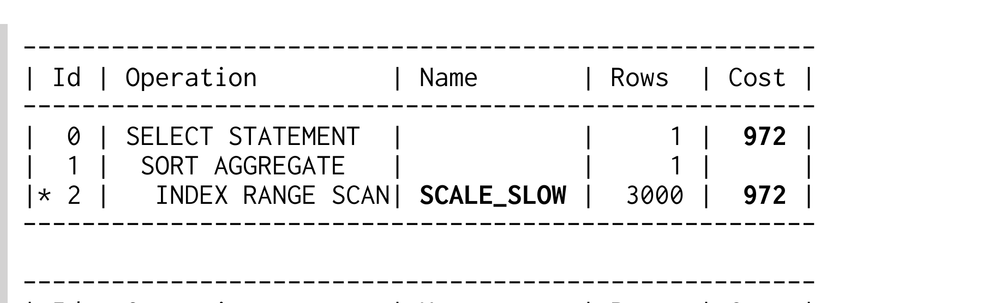
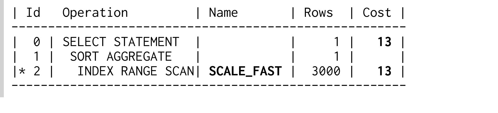
Các execution plan gần như giống hệt nhau — chúng chỉ dùng một index khác nhau. Dù cost value phản ánh khác biệt về tốc độ, lý do không thể nhìn thấy trong execution plan.
Có vẻ chúng ta đang gặp một “slow index experience”; query chậm dù có dùng index. Tuy vậy, chúng ta không còn tin vào myth về “broken index”. Thay vào đó, hãy nhớ hai yếu tố khiến index lookup chậm: (1) table access và (2) scan một index range rộng.
Không execution plan nào hiển thị operation TABLE ACCESS BY INDEX ROWID, nên một execution plan chắc chắn phải scan một index range rộng hơn execution plan kia. Vậy execution plan hiển thị index range được scan ở đâu? Tất nhiên là trong predicate information!
Predicate information hoàn toàn không phải là detail không cần thiết có thể bỏ qua như ở trên. Execution plan không có predicate information là không đầy đủ. Điều đó có nghĩa bạn không thể thấy lý do khác biệt về performance trong các plan ở trên. Nếu xem execution plan đầy đủ, chúng ta sẽ thấy khác biệt.
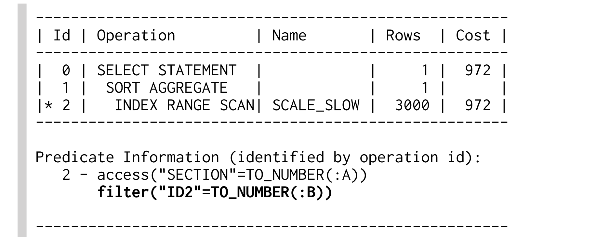
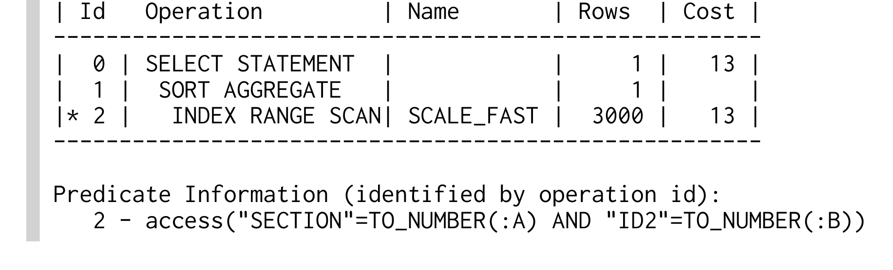
Khác biệt giờ đã rõ: khi dùng index SCALE_SLOW, chỉ condition trên SECTION là access predicate. Database đọc mọi row trong section rồi loại những row không khớp filter predicate trên ID2. Response time tăng theo số row trong section. Với index SCALE_FAST, database dùng mọi condition làm access predicate. Response time tăng theo số row được select.
Mảnh ghép cuối cùng trong câu đố là index definition. Chúng ta có thể suy ra index definition từ execution plan không?
Definition của index SACLE_SLOW phải bắt đầu bằng column SECTION — nếu không, nó không thể được dùng làm access predicate. Condition trên ID2 không phải access predicate — vì vậy nó không thể đứng sau SECTION trong index definition. Điều đó có nghĩa index SACLE_SLOW phải có tối thiểu ba column, trong đó SECTION là column đầu tiên và ID2 không phải column thứ hai. Đó chính xác là index definition được dùng cho test này:
Database không thể dùng ID2 làm access predicate vì column ID1 đứng ở vị trí thứ hai.
Definition của index SCALE_FAST phải có column SECTION và ID2 ở hai vị trí đầu vì cả hai đều được dùng làm access predicate. Tuy vậy, chúng ta không thể nói gì về thứ tự của chúng. Index được dùng cho test bắt đầu bằng column SECTION và có thêm column ID1 ở vị trí thứ ba:
Column ID1 chỉ được thêm vào để index này có cùng kích thước với SCALE_SLOW — nếu không, bạn có thể nghĩ rằng kích thước là nguyên nhân tạo ra khác biệt.
Việc cân nhắc cách định nghĩa multi-column index thường dừng lại ngay khi index được dùng cho query đang tune. Tuy nhiên, optimizer không dùng một index vì đó là index “đúng” cho query, mà vì nó hiệu quả hơn full table scan. Điều đó không có nghĩa nó là index tối ưu cho query.
Ví dụ trước cho thấy khó nhận ra column order sai trong execution plan. Predicate information thường bị ẩn khá kỹ, nên bạn phải chủ động tìm nó để kiểm tra index usage có tối ưu hay không.
Chẳng hạn, SQL Server Management Studio chỉ hiển thị predicate information dưới dạng tool tip khi di chuột lên index operation (“hover”). Execution plan sau dùng index SCALE_SLOW; vì vậy nó hiển thị condition trên ID2 dưới dạng filter predicate (chỉ là “Predicate”, không có Seek).
Figure 3.3. Predicate Information dưới dạng Tool Tip

Lấy predicate information từ execution plan của MySQL hoặc PostgreSQL thậm chí còn awkward hơn. Appendix A ở page 165 có chi tiết.
Dù predicate information có vẻ không đáng kể đến đâu trong execution plan, nó vẫn có ảnh hưởng lớn đến performance — đặc biệt khi system phát triển. Hãy nhớ rằng không chỉ data volume tăng mà access rate cũng tăng. Đây là một parameter khác của scalability function.
Figure 3.4 biểu diễn response time theo access rate — data volume giữ nguyên. Nó cho thấy execution time của cùng query như trước và luôn dùng section có data volume lớn nhất. Điều đó có nghĩa point cuối cùng của Figure 3.2 ở page 81 tương ứng với point đầu tiên trong chart này.
Figure 3.4. Scalability theo System Load

Đường nét đứt biểu diễn response time khi dùng index SCALE_SLOW. Nó tăng lên đến 32 giây khi có 25 query chạy đồng thời. So với response time không có background load — như có thể xảy ra trong môi trường development — thời gian này lâu hơn 30 lần. Ngay cả khi có full copy của production database trong môi trường development, background load vẫn có thể khiến query chạy chậm hơn nhiều trong production.
Đường liền biểu diễn response time khi dùng index SCALE_FAST — index này không có filter predicate nào. Response time vẫn thấp hơn hai giây ngay cả khi có 25 query chạy đồng thời.
Response time đáng ngờ thường bị xem nhẹ trong quá trình development. Phần lớn là vì chúng ta kỳ vọng “production hardware mạnh hơn” sẽ mang lại performance tốt hơn. Nhưng thường thì ngược lại, vì production infrastructure phức tạp hơn và tích lũy những latency không xuất hiện trong môi trường development. Ngay cả khi test trên infrastructure tương đương production, background load vẫn có thể gây ra response time khác nhau. Phần tiếp theo sẽ cho thấy nhìn chung không hợp lý khi kỳ vọng response nhanh hơn từ “hardware lớn hơn”.
Hardware lớn hơn không phải lúc nào cũng nhanh hơn — nhưng thường có thể xử lý nhiều load hơn. Hardware lớn hơn giống một xa lộ rộng hơn là một chiếc xe nhanh hơn: bạn không thể lái nhanh hơn — thực ra là không được phép — chỉ vì có thêm nhiều làn đường. Đó là lý do thêm hardware không tự động cải thiện SQL query chậm.
Chúng ta không còn ở những năm 1990 nữa. Khi đó, computing power của single-core CPU tăng rất nhanh. Phần lớn vấn đề response time biến mất trên hardware mới chỉ vì CPU được cải thiện. Nó giống như các model xe mới liên tục chạy nhanh gấp đôi model cũ mỗi năm! Tuy nhiên, single-core CPU power đã chạm giới hạn trong vài năm đầu của thế kỷ 21. Trục này gần như không còn cải thiện nữa. Để tiếp tục tạo ra CPU ngày càng mạnh, vendor phải chuyển sang chiến lược multi-core. Dù cho phép nhiều task chạy đồng thời, cách này không cải thiện performance nếu chỉ có một task. Performance có nhiều hơn một dimension.
Scaling theo chiều ngang (thêm server) cũng có những giới hạn tương tự. Dù nhiều server có thể xử lý nhiều request hơn, chúng không cải thiện response time của một query cụ thể. Để tìm kiếm nhanh hơn, bạn cần một search tree hiệu quả — kể cả trong các hệ thống non-relational như CouchDB và MongoDB.
Indexing đúng cách nhằm khai thác trọn vẹn scalability dạng logarithmic của B-tree index. Đáng tiếc là indexing thường được thực hiện rất cẩu thả. Chart trong “Performance Impacts of Data Volume” cho thấy rõ tác động của việc indexing cẩu thả.
Figure 3.5. Response Time theo Data Volume
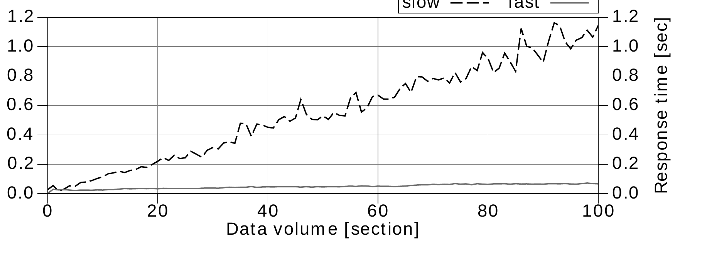
Khác biệt response time giữa một index cẩu thả và một index đúng cách thật đáng kinh ngạc. Gần như không thể bù đắp tác động này bằng cách thêm hardware. Ngay cả khi bạn giảm được response time bằng hardware, vẫn cần đặt câu hỏi liệu đó có phải giải pháp tốt nhất cho vấn đề này hay không.
Nhiều hệ thống được gọi là NoSQL vẫn tuyên bố có thể giải quyết mọi performance problem bằng horizontal scalability. Tuy nhiên, scalability này phần lớn bị giới hạn ở write operation và được thực hiện bằng eventual consistency model. SQL database dùng strict consistency model làm write operation chậm hơn, nhưng điều đó không nhất thiết đồng nghĩa với throughput kém. Hãy tìm hiểu thêm trong box có tiêu đề “Eventual Consistency and the CAP Theorem”.
Thêm hardware thường không cải thiện response time. Thực tế, nó thậm chí có thể làm system chậm hơn vì complexity tăng thêm có thể tích lũy nhiều latency hơn. Network latency sẽ không thành vấn đề nếu application và database chạy trên cùng một computer, nhưng setup này khá hiếm trong production environment, nơi database và application thường được cài trên hardware riêng. Security policy thậm chí có thể yêu cầu firewall giữa application server và database — thường làm network latency tăng gấp đôi. Infrastructure càng phức tạp thì càng tích lũy nhiều latency và response càng chậm. Tác động này thường dẫn đến quan sát ngược với trực giác: production hardware đắt tiền lại chậm hơn môi trường desktop PC rẻ tiền dùng cho development.
Duy trì strict consistency trong một distributed system đòi hỏi synchronous coordination của mọi write operation giữa các node. Nguyên tắc này có hai side effect khó chịu: (1) thêm latency và làm response time tăng; (2) làm giảm overall availability vì nhiều member phải cùng available tại một thời điểm để hoàn thành write operation.
Distributed SQL database thường bị nhầm với computer cluster dùng shared storage system hoặc master-slave replication. Thực tế, distributed database giống một web shop tích hợp với ERP system hơn — thường là hai product khác nhau của hai vendor khác nhau. Consistency giữa hai system vẫn là một mục tiêu đáng mong muốn và thường được đạt bằng two-phase commit (2PC) protocol. Protocol này thiết lập global transaction mang lại behavior “all-or-nothing” quen thuộc trên nhiều database. Chỉ có thể hoàn thành global transaction nếu mọi member tham gia đều available. Vì vậy, nó làm giảm overall availability.
Distributed system càng có nhiều node thì strict consistency càng trở nên khó khăn. Duy trì strict consistency gần như không thể nếu system có nhiều hơn một vài node. Ngược lại, bỏ strict consistency giải quyết vấn đề availability và loại bỏ response time tăng thêm. Ý tưởng cơ bản là tái lập global consistency sau khi hoàn thành write operation trên một subset của các node. Cách tiếp cận này chỉ còn một vấn đề chưa giải quyết: không thể ngăn conflict nếu hai node chấp nhận các thay đổi mâu thuẫn. Consistency cuối cùng đạt được bằng cách xử lý conflict, không phải ngăn conflict. Trong ngữ cảnh đó, consistency có nghĩa mọi node có cùng data — không nhất thiết là data đúng hoặc tốt nhất.
CAP Theorem của Brewer mô tả các dependency tổng quát giữa Consistency, Availability và Partition tolerance.
Một latency khác rất quan trọng là disk seek time. Spinning hard disk drive (HDD) cần khá nhiều thời gian để di chuyển các bộ phận cơ học đến vị trí có thể đọc data được yêu cầu — thường là vài millisecond. Latency này xuất hiện bốn lần khi traverse một B-tree bốn level — tổng cộng vài chục millisecond. Dù đó là cả một “thế kỷ” đối với computer, nó vẫn thấp hơn rất nhiều so với ngưỡng nhận biết của chúng ta… nếu chỉ xảy ra một lần. Tuy nhiên, một SQL statement rất dễ trigger hàng trăm hoặc thậm chí hàng nghìn disk seek, đặc biệt khi kết hợp nhiều table bằng join operation. Dù caching giảm mạnh vấn đề và công nghệ mới như SSD giảm seek time một order of magnitude, join vẫn thường bị cho là chậm. Vì vậy, chương tiếp theo sẽ giải thích cách dùng index để join table hiệu quả.
Solid State Disk (SSD) là công nghệ mass storage không có bộ phận chuyển động. Seek time điển hình của SSD nhanh hơn seek time của HDD một order of magnitude. SSD xuất hiện trong enterprise storage khoảng năm 2010 nhưng do cost cao và lifetime có giới hạn, chúng chưa thường được dùng cho database.
Tuy nhiên, database cache data được truy cập thường xuyên trong main memory. Điều này đặc biệt hữu ích với data cần cho mọi index access — chẳng hạn index root node. Database có thể cache toàn bộ các index được dùng thường xuyên, nhờ đó một index lookup không trigger dù chỉ một disk seek.
Một SQL query bước vào bar và nhìn thấy hai table.
Nó bước đến gần và hỏi: “Tôi join cùng các bạn được không?”
—Source: Unknown
Join operation biến đổi data từ normalized model thành dạng denormalized phù hợp với một processing purpose cụ thể. Join đặc biệt nhạy cảm với disk seek latency vì nó kết hợp các data fragment nằm rải rác. Indexing đúng cách một lần nữa là giải pháp tốt nhất để giảm response time. Tuy nhiên, index đúng phụ thuộc vào việc query dùng thuật toán nào trong ba join algorithm phổ biến.
Tuy nhiên, có một điểm chung cho mọi join algorithm: chúng chỉ xử lý hai table mỗi lần. SQL query có nhiều table cần nhiều bước: trước tiên xây dựng một intermediate result set bằng cách join hai table, sau đó join result với table tiếp theo, cứ như vậy.
Dù join order không ảnh hưởng đến final result, nó vẫn ảnh hưởng đến performance. Vì vậy optimizer sẽ đánh giá mọi permutation có thể của join order và chọn permutation tốt nhất. Điều đó có nghĩa chỉ riêng việc optimize một complex statement cũng có thể trở thành performance problem. Càng có nhiều table cần join, càng có nhiều execution plan variant phải đánh giá — nói theo toán học là n! (factorial growth), dù đây không phải vấn đề khi dùng bind parameter.
Dù intermediate result giải thích algorithm rất rõ, điều đó không có nghĩa database phải materialize nó. Nếu vậy, database phải lưu intermediate result của join đầu tiên trước khi bắt đầu join tiếp theo. Thay vào đó, database dùng pipelining để giảm memory usage. Nghĩa là mỗi row của intermediate result được pipeline ngay lập tức sang join operation tiếp theo — tránh phải lưu intermediate result set.
Nested loops join là join algorithm nền tảng nhất. Nó hoạt động giống như dùng hai nested query: outer hoặc driving query fetch result từ một table, rồi một query thứ hai cho mỗi row của driving query fetch data tương ứng từ table còn lại.
Bạn thực sự có thể tự dùng “nested select” để implement nested loops algorithm. Tuy nhiên, đó là cách tiếp cận rắc rối vì network latency xuất hiện chồng lên disk latency — khiến overall response time còn tệ hơn. “Nested select” vẫn rất phổ biến vì dễ implement mà không nhận ra mình đang làm vậy. Object-relational mapping (ORM) tool đặc biệt “helpful” ở điểm này… đến mức cái gọi là N+1 selects problem đã trở nên tai tiếng trong lĩnh vực này.
Các ví dụ sau cho thấy những join “accidental nested select” được tạo ra bởi các ORM tool khác nhau. Các ví dụ search employee có last name bắt đầu bằng 'WIN' và fetch toàn bộ SALES của những employee đó.
ORM không generate SQL join — thay vào đó chúng query table SALES bằng nested select. Hiệu ứng này được gọi là “N+1 selects problem”, hoặc ngắn hơn là “N+1 problem”, vì tổng cộng nó execute N+1 select nếu driving query trả về N row.
Ví dụ JPA dùng interface CriteriaBuilder.
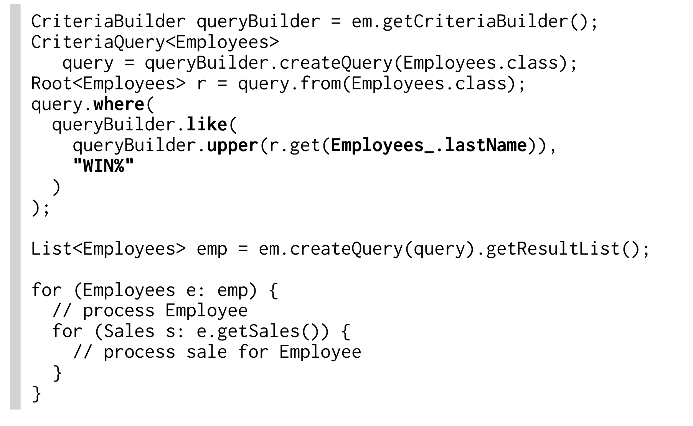
Hibernate JPA 3.6.0 generate N+1 select query:
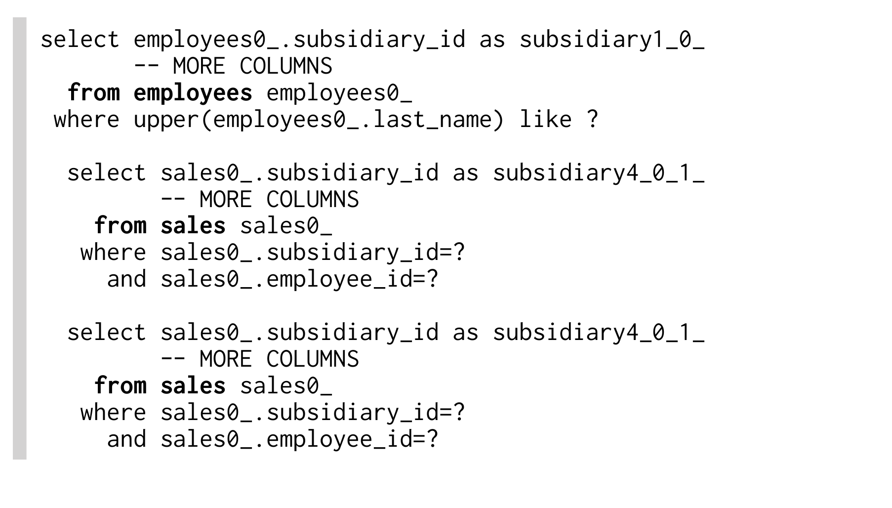